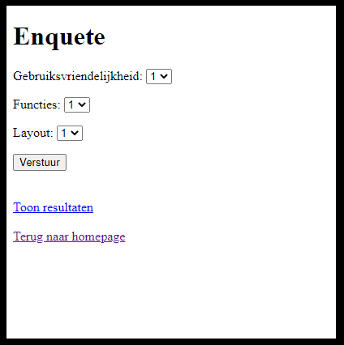

Voor het vak Projectwerk netwerkbeheer, in Thomas More, heb ik bij HIVSET een Escaperoom gemaakt als stagetaak.
Voor dit project heb ik geheimen kasten, luiken bekabeld en aangesloten. Deze werden met een Arduino aangestuurd.
Naast een paar brandwondjes is dit deel van de taak heel vlot verlopen.
Mijn taak bestond uit het uittesten en het herschrijven van de software die op de Arduino werd uitgevoerd.
Deze code was grotendeels door iemand anders geschreven.
Deze moest eerst ontleed worden, de code voor het opendoen van de kastjes was niet overzichtelijk geschreven.
Dit was de eerste aanpassing die moest gebeuren.
De tweede aanpassing die moest gebeuren was eerder geluid gerelateerd.
Ik moest er voor zorgen telkens wanneer de studenten iets goed of mis deden in de Escaperoom dat er een bijpassend geluidje kwam.
Wanneer ze de code goed indrukte, was er een klik geluidje te horen.
Doordat ze dit pas achteraf wisten, was het iets moeilijker om alles open te krijgen.
Dit was mij uiteindelijk gelukt dankzij veel opzoek werk.
Omdat ik niet zo bekend was met deze codeertaal.
Door deze hele taak heb ik beter geleerd hoe je iets op een correct manier moet bekabelen en dit moet aansturen met een Arduino.
Belangrijk was ook om een hulplijn te vragen in het team, als sommige stukken van de code niet lukte. Ook al had ik soms wat tegenslagen, het was een interessante en leerzame taak om te maken.
Van mevrouw Kenens van Professional Skills 2 , voor het vak Systems engineering & analysis hebben ons team (Taro Verschueren, Seppe Wuyts en ik) de opdracht gekregen om een saaie koffiehoek in het IT lokaal naar een interessantere koffiekoek om te toveren.
De opdracht van ons project hield in: Op een klein schermpje het nieuws zien, maar ook je eigen foto maken en ook de mogelijkheid om een opinie peiling in te vullen. Dit alle tijdens het bestellen van een koffie. Mijn taak bestond voornamelijk uit het schrijven en de opmaak van de website en enquête. De verschillende thema’s van de krant in tabellen sorteren en in de website verwerken. Daarbij wanneer er iemand op een thema drukte moest het bijhorende krantenartikel verschijnen. Het moeilijkste was om de bijhorende foto’s in de artikelen te plaatsen. Overigens moest ik ook voor de opmaak zorgen van de enquête. Hieronder ziet u de resultaten van mijn werk.
Van deze taak heb ik vooral geleerd om te luisteren naar de klant. Maar ook samen werken en luisteren met en naar groepsgenoten is zeer belangrijk. En zo elkaars sterktes te benutten wat zorgde voor dat het project heel vlot verliep.
De opdracht voor het praktisch examen van IoT Essentials bestaat uit het bouwen van een Raspberry Pi radio.
De radio moet minstens vier kanalen kunnen afspelen.
Doordat ik al mijn opdrachten van IoT essentials leek dit gedeelte een simpele taak om te volbrengen.
Desalniettemin was het geen gemakkelijke taak. Nu begon het moeilijkere gedeelte van de taak.
Nu moest ervoor gezorgd worden dat de volume en kanalen geregeld worden door twee verschillende potentiometers.
Dit was onbekend voor mij.
We hadden al wel eens potentiometers gebruikt tijdens de oefeningen, maar nog nooit had ik iets er mee aangestuurd.
Wel hadden we de eerder vernoemde kanalen aangestuurd met knoppen.
Deze code kon gebruikt worden mits wat aanpassingen voor de potentiometer die de kanalen regelt.
Dat bracht wel wat obstakels met zich mee maar die hebben we overwonnen.
Daarbij nog even zoeken achter de code voor de volume te regelen. Dit duurde wel even vooraleer deze code ook werkte.
Dit was al een begin van een Raspberry Pi radio.
Wat ik tot nu toe al had was als je de eerste potentiometer naar links draaide dat mijn radio één zender vooruit ging.
Wanneer de eerste potentiometer ongeveer in het midden bleef gebeurde er niets maar wanneer je de potentiometer naar rechts draaide ging de Raspberry pi radio één zender terug.
Dit was om een onderdeel van de opdracht was als je twee zenders vooruit zou willen dat je eerst naar links moet draaien, dan naar het midden en dan nogmaals naar links.
Met een paar aanpassingen in het configuratie document van de Music Player Daemon nu kon je met mijn tweede potentiometer de volume aanpassen.
De volgende stap was het lcd-scherm in orde te maken.
Het lcd-scherm gemonteerd en bekabeld om mijn breadboard.
Het lcd-scherm was bedoelt om de gebruiker de correcte zender en volume te laten zien telkens wanneer er aan de potentiometers werden gedraaid.
Dit was snel in orde gekomen omdat ik deze code ongeveer al had geschreven in een ouder project.
Er werd ook gevraagd om het IP-adres te tonen op het lcd-scherm.
Daar heb ik even wat moeten over nadenken omdat je het IP-adres niet hard mocht coderen.
Maar na even te zoeken en de code aan te passen heb ik het uiteindelijk gevonden.
Toen moest het stepper-motortje nog aangesloten worden op mijn Raspberry pi.
Dit was belangrijk omdat we moesten kunnen aantonen wanneer er van zender veranderd werd dat het motortje meeging in de juiste richting.
Dit was niet gemakkelijk om het te coderen. Er kwam veel bij kijken voor de code te schrijven omtrent de richting van de motor.
Het aansluiten van de motor was redelijk snel gedaan, doordat de oefening me nog fris in het geheugen lag.
Door veel opzoekwerk te hebben gedaan is het mij uiteindelijk gelukt om de motor op de juiste manier aan de gang te krijgen.
De opstelling zelf heb is nog niet gebeurd. Het programmeren wil ik eerst uit de weg hebben.
Maar ook omdat ik het leukste als laatste wilden houden.
Waarna ik over ben gegaan naar het Ubeac-platform.
Op dit platform hebben we de opdracht gekregen om alle uitgelezen potentiometerwaarde te tonen.
Het volume was redelijk simpel opgelost maar er kwam wel veel meer bij te kijken bij het uitlezen van het exacte kanaal.
Dit moest ik eerst uit een ander stukje code halen vooraleer ik dit uit kon lezen.
Het was me uiteindelijk wel gelukt desalniettemin heb ik hier lang moeten over nadenken.
Doordat het mijn eerste keer zelfstandig coderen was met Python, heb ik hier veel van bijgeleerd.
Daarbij verbeterde mijn kennis over hoe je verschillende componenten aan elkaar moet koppelen voor een tof project te kunnen ontwikkelen.
Voor het vak Project Hosting werden groepjes van zes medestudenten gevormd.
Onze opdracht is om in deze individuele groepjes een webhosting platform op te stellen.
Dit houdt in dat er de mogelijkheid moet zijn om gemakkelijk een zelfgemaakte website te hosten via het gemaakte platform, nadrukkelijk voor studenten van APP.
Daarna kwam de conceptfase eraan. Dit hield vooral in dat de functionele en niet-functionele eisen onderzocht moesten worden.
Daarvoor moest eerst de technologie opgezocht worden waarmee we verder ons project zullen realiseren. Zo begon het opzoeken.
Er werd niet één enkele persoon aan elk onderwerp toegewezen zodat ieder zijn idee kon inbrengen bij alle onderwerpen.
Na de bespreking kon er aan de powerpoint gewerkt worden en de voorbereiding voor het presenteren van ons idee beginnen.
Nu komt de implementatie fase. Het plan van aanpak werd eerst opgesteld zodat we kunnen laten zien hoe wij het project hebben aangepakt.
Het plan werd eerlijk verdeeld onder al de groepsleden. Mijn verantwoordelijkheid lag bij de conclusie maar ik werkte samen met Alex, die voor de inleiding stond, zodat we een samenhorend document zullen verkrijgen.
Hierna startte het implementeren van het opzoekwerk dat al volledig gedaan is.
Hiervoor was het mijn taak om de ondersteuning en de documentatie van de front-end website en de basis ervan te ontwerpen.
Er kan nog niet veel vertelt worden over het project, enkel dat we al snel de conclusie getrokken hadden dat we iets te ambitieus begonnen waren met het programma Kubernetes.
Hierdoor zijn we afgezakt naar Docker waar de groep iets zekerder van is.
Naar mijn mening is dit een heel leuk project en een mega toffe ervaring.
Mij bleef het beste bij dat je moet luisteren naar elkaar en natuurlijk naar de leerkracht, omwille van de tips en ideeën die we onder elkaar uitwisselen.
Op deze manier kunnen we er samen uitkomen en fouten vermijden.